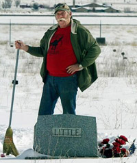
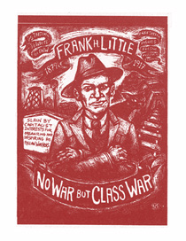

This is the news page for all IWW Departments and Unions. This page displays *all* news items from every Department and Union. To see news only from a particular Department, click on the Department title below.
For an overview of the IWW's Union structure, please visit the Unions homepage.
For branch, campaign, or general labor news, click on the appropriate sub-menu bars at the left under
the main "news" bar.
Submitted on Tue, 03/25/2008 - 3:12pm

Announcing the 2008 IWW Organizing Summit - Toronto, Ontario - April 18, 19, & 20
Registration is On Now!
The second IWW Organizing Summit has arrived and is set to explode!
As the IWW engages in more and more workplace battles, our vision for
the future must keep pace with our daily struggles. Our resolve is deeper and our wits keener than ever.
Make sure your branch sends a strong delegation and make sure you're on it! The 2008 Organizing Summit is on the scene and features practical trainings and discussions to build our skills; strategic sessions and industry break-outs to enhance our analysis and plot out the struggle; and visionary all-Summit conversations to prepare us
for the future.
Don't miss:
- Sustaining your Solidarity Union;
- Militancy in contracted shops;
- Race, gender, and sexuality in organizing;
- Success and failure in recent IWW campaigns;
- Industrial organizing beyond the GMB;
- Targeting producer market businesses; and
- The IWW's future in the present.
Break-outs by industry to feature groups of
- Food Workers (iu460),
- Retail Workers (iu660),
- Education Workers (iu620),
- Health Care and Social Service Workers (iu610),
- Transportation Workers (dept 500),
- Construction Workers (dept 300), and more!
Hosted by one of the IWW's most dynamic branches, the Toronto IWW anticipates a blow out 2008 Organzing Summit with IWWs from all
overthe continent and farther afield.
Download a registration form
For more details contact - iwwtoronto [at] gmail.com
Submitted on Mon, 03/03/2008 - 1:30pm
Disclaimer - The opinions of the author do not necessarily match those of the IWW. This article is reposted in accordance to Fair Use guidelines.

By John Grant Emeigh - Montana Standard, March 2, 2008
BUTTE - With an old, worn broom, Dennis Georg swept off nearly a foot
of February snow that had accumulated on the grave of Frank Little.
It was just a small favor from one Wobbly to another Wobbly: Solidarity to the end.
Georg,
as was Little, is a card-carrying member of a small but controversial
union known as the Industrial Workers of the World (IWW). It was
started in Chicago by a group of socialists and anarchists who wanted
to unite all the workers of the world. They were reviled by many as
subversives and Communists.
"It was once very dangerous to carry an IWW card," Georg said recently while in Butte.
Submitted on Mon, 02/18/2008 - 10:33am
Saturday, February 16, 2008.
Approximately one dozen fellow workers from the Twin Cities General Membership Branch of the Industrial Workers of the World marched in support of immigrant rights and struggles in Minnesota on Saturday. The demonstration was organized by MIRAC, the Minnesota Immigrant Rights Action Coalition.

The rights of immigrant workers - both documented and undocumented - is part of a nationwide discussion during this election year, and an international discussion. The terms of the discussion are often the same in today's neoliberal environment. The reactionary right demonizes all those who are forced or choose to travel in search of security, opportunity, and a life; the reactionary left pretends that this is merely a moral issue and ignores the economics of immigration, and the 'muddled middle' hold a variety of contradictory opinions.
Submitted on Tue, 11/13/2007 - 2:49pm
Disclaimer - The opinions of the author do not necessarily match those of the IWW. The image pictured to the right did not appear in the original article, we have added it here to provide a visual perspective. This article is reposted in accordance to Fair Use guidelines.
By: John S. Adams - Missolua Independent, November 8, 2007
It wasn’t as dramatic as the “Continental Congress of the Working Class” that formed the union in 1905, but for the handful of people who turned up at the monthly meeting of the Industrial Workers of World (IWW) at Missoula’s Union Club on Monday night, it was a momentous occasion.
For the first time in as long as anyone can remember, the Missoula-based branch of the “One Big Union” reached the minimum 10 members, thus earning their official charter. Sure, it’s only 10 members, but for Jay Bostrom, the local IWW’s most active and outspoken member, it’s a big deal.
“Folks, now we can start keeping some membership dues and start doing some real organizing,” Bostrom told the small group gathered in the Union Club’s basement.
The IWW rose to prominence in Montana in the early part of the 20th century with efforts to organize miners in Butte, and lumberjacks across the state. Their “Free Speech Fights” in Missoula and Spokane made national headlines as Wobblies (as IWW members are known) spoke out against capitalist repression until they were arrested by the hundreds, clogging the jails and courts and eventually forcing those cities to overturn their free speech ordinances. Today the IWW boasts about 1,000 members worldwide.
The Wobblies’ core philosophy, according to the preamble to the IWW constitution, declares that “the working class and the employing class have nothing in common.” Rather than organizing workers by trade, the IWW seeks to unite all workers as a class in order to rise up and take over means of industrial production and eventually overthrowing capitalism and creating a more peaceful society.
A lofty goal to be sure, but for the few energized members who showed up Monday night to plan a free speech fight of their own against international free trade agreements, you’ve got to start somewhere.
“I see our role as more broadening the discourse to the left,” says Dave Jones, the group’s spokesman. “There really hasn’t been an anti-capitalist movement around here for a long time.”
Submitted on Wed, 10/17/2007 - 8:39pm
New webpage: http://www.iww.org/en/projects/women
During General Assembly 2007, the Women’s Caucus met to discuss issues regarding gender and inclusion. Women from various spots in the country shared ideas, personal stories, and suggestions on where to go from here. Recognizing that the women’s caucus has met in previous years at the GA, the women at this year’s caucus hope to build on what was started in the past.
Below is a list of projects which we think will foster inclusion in the IWW. We welcome all wobblies to participate, including women, men, and transgendered people. Please get in touch if you would like to work on any of these projects.